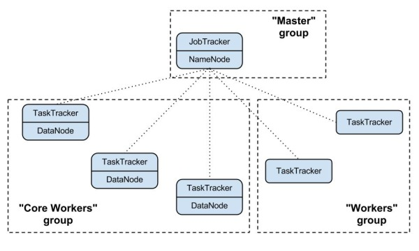

A cluster deployed by Sahara consists of node groups. Node groups vary by their role, parameters and number of machines. The picture below illustrates example of Hadoop cluster consisting of 3 node groups each having different role (set of processes).
Node group parameters include Hadoop parameters like io.sort.mb or mapred.child.java.opts, and several infrastructure parameters like flavor for VMs or storage location (ephemeral drive or Cinder volume).
A cluster is characterized by its node groups and its parameters. Like a node group, cluster has Hadoop and infrastructure parameters. An example of cluster-wide Hadoop parameter is dfs.replication. For infrastructure an example could be image which will be used to launch cluster VMs.
In order to simplify cluster provisioning Sahara employs concept of templates. There are two kind of templates: node group template and cluster template. The former is used to create node groups, the later - clusters. Essentially templates have the very same parameters as corresponding entities. Their aim is to remove burden of specifying all the required parameters each time user wants to launch a cluster.
In the REST interface templates have extended functionality. First you can specify node-scoped parameters here, they will work as a defaults for node groups. Also with REST interface during cluster creation user can override template parameters for both cluster and node groups.
A provisioning plugin is a component responsible for provisioning Hadoop cluster. Generally each plugin is capable of provisioning a specific Hadoop distribution. Also plugin can install management and/or monitoring tools for a cluster.
Since Hadoop parameters vary depending on distribution and Hadoop version, templates are always plugin and Hadoop version specific. A template could not be used with plugin/Hadoop version different than ones it was created for.
You may find the list of available plugins on that page: Provisioning Plugins
OpenStack starts VMs based on pre-built image with installed OS. The image requirements for Sahara depend on plugin and Hadoop version. Some plugins require just basic cloud image and install Hadoop on VMs from scratch. Some plugins might require images with pre-installed Hadoop.
The Sahara Image Registry is a feature which helps filter out images during cluster creation. See Registering an Image for details on how to work with Image Registry.
Sahara has several interesting features. The full list could be found there: Features Overview